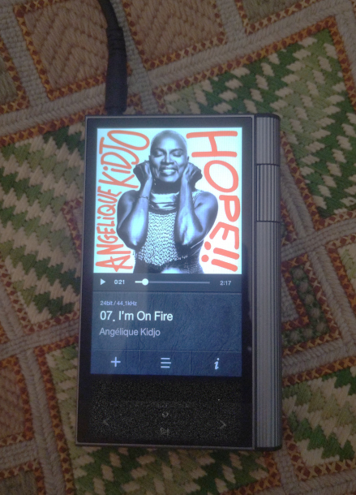
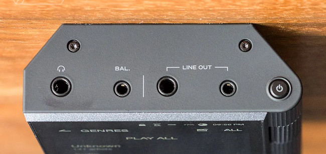

Who needs a dedicated portable music player in 2026?
There was a time when almost everybody owned a portable music player. The Apple iPod was a household name, but there were many alternatives – often superior ones. Now almost everybody has a smartphone, and modern smartphones are pretty competent at playing audio. So it’s hard to avoid asking who needs a dedicated music player these days. Can you even buy one if you do?
To answer the easier question, yes, these products are still available. There are cheap, nasty ones from manufacturers you’ve probably never heard of, and top-quality ones from established brands like Sony, Astell & Kern, and FIIO. In fact, sales of these devices seem to be on the increase, despite the ubiquity of smartphones.
Most (all?) decent-quality portable music players now run Android internally. It may not be obvious, and the user interface might not look like one you see on a smartphone, but Android is there, all the same. So the question inevitably arises:
Why not just use an Android smartphone as a music player?
After all, you’ll be running much the same software and hardware with a dedicated music player, and the user experience will be similar. In fact, a player like FIIO’s JM21 is essentially an Android cellphone without the antenna, and some added audio bits. It’s a full-fat Google Android experience with all that entails, for good or ill.
On the other hand, Sony’s NW-A306 does more to conceal its Android internals, and the Astell & Kern range goes even further. Still, most of these devices offer the possibility of running regular Android apps, even if it isn’t entirely obvious how to install them. They all have a built-in music player app, which may offer advantages over the generic ones, but not always.

Because they’re running Android, these dedicated players have similar disadvantages to Android smartphones, including relatively long start-up and shut-down times, comparatively poor battery life, and considerable size and weight. When I use terms like “relatively” and “comparatively”, I’m measuing these Android-based players against pre-Android devices like the Cowon D2, which is the size of a match book, boots in less than two seconds, and offers 50+ hours of continuous playback. The D2 is an old-fashioned player, with no support for any kind of network operation, but it serves to illustrate how much we sacrifice, when we run Android on a music player, rather than dedicated audio software.
So, since most contemporary portable music players run Android, with all the disadvantages that entails, and since most of us already carry a smartphone, why bother?
Why you might still want a dedicated music player
It seems to me that there are at least four reasons to continue to use a dedicated portable media player even if you have a smartphone. If you don’t have, or want, a smartphone, then the benefit of a portable music player is clear, and doesn’t need further elaboration.
First, and probably most important, the dedicated player may offer better sound quality, for a number of reasons.
Most obviously, a dedicated player will invariably have a wired headphone connection, something that is woefully lacking in most modern smartphones. The best-sounding headphones are still wired and, although Blueetooth audio is closing the gap, most fussy listeners will still want wired headphones.
Driving the wired headphone socket will likely be separate digital-to-analog converter (DAC) and amplifier chips from established manufacturers, rather than something built into the smartphone’s CPU as an afterthought.
The potential audio improvements won’t stop there: a dedicated player will usually have better analog circuit layout, and beefier power management throughout. It might have a high-accuracy clock to reduce jitter in the DAC. These improvements, of course, only affect wired operation.
Whether you can hear these improvements depends on your source material, your headphones or other hardware, your listening environment, and how fussy you are. One improvement you’ll certainly hear, though, if you use high-impedance wired headphones is the increased headphone voltage. Even the most audio-centric smartphones aren’t designed to drive headphones of this kind.
If you want to use wired headphones, and you’re concerned about the quality of a smartphone’s DAC, you could use an external DAC. These range from tiny plug-in dongles to full-sized hi-fi equipment. Many of even the smallest dongles use the same hardware as a dedicated music player. Adding a dongle won’t give you the improvements associated with the heftier power supply in a dedicated player, because the dongle will still be powered by the smartphone. However, as a minimum, it will give you a wired headphone connection, and even a top-quality DAC dongle will be cheaper than a new music player.
There’s also a concern that, however good a smartphone’s audio hardware might be, Android potentially processes the audio data in unwanted ways, and this affects both wired and wireless operation. This audio processing isn’t a defect – Android needs to be able to merge different audio streams that might have different sample rates and bit widths. Android typically re-samples audio data as it is played, usually to 48,000 samples per second. Clearly this is a problem if you’re playing a source with a higher sample rate than this, but it might also be a problem if the sample rate is lower.
Dedicated audio players typically use proprietary audio routing techniques to avoid these problems. My Kann, for example, employs a simple solution: as it supports no audio playback except from its own, built-in app, the app just writes audio data direct to the DAC (or direct to the Bluetooth system for wireless operation). FIIO players, however, being closer to regular Android, have a switchable “direct” mode that limits audio output to one app at a time. This, again, allows selected apps to bypass Android’s audio mangling.
As helpful as these techniques might be, it’s worth remembering that some generic Android audio players, notably Neutron and USB Audio Player Pro, can also drive a DAC directly, particularly if it’s a USB Dongle.
What all this means, I think, is that an Android smartphone with a USB DAC dongle, and software to suit, can probably achieve sound quality that isn’t all that far from that of a dedicated player. Still, the nuisance of carrying around a dangling dongle shouldn’t be overlooked.
The second potential benefit of a dedicated player is that it might have a more convenient user interface, with additional, physical buttons. My Kann has tactile start/stop and next/previous buttons, as well as a rotary volume control. If you’ve only ever used a smartphone for music, you shouldn’t underestimate the value of small features like this, which benefit both wired and wireless listening.
Third, a dedicated music player will usually have inputs and outputs that smartphones lack. Of course there’s the 3.5mm headphone jack, but many dedicated players have balanced headphone connections and line-level outputs as well. The line output is particularly useful if you’re connecting a player to a hi-fi system or a powered headphone amplifier. You can use a headphone socket for this, but you’ll need to be careful about how you set the volume.

Finally, a dedicated player will almost always have expandable storage, which many contemporary smartphones lack. If you have a large collection of music in FLAC or similar formats, it can easily guzzle up a lot of storage. Support for 2TB of storage is commonplace in dedicated players. My Kann has dual SD card slots as well as built-in storage but, frankly, this is less useful than I thought it would be, because organizing these multiple storage areas can be a nuisance.
Can any Android smartphones compete with a dedicated music player?
If you have a smartphone that lacks a headphone jack, and whose designers have taken little trouble over audio – which describes almost all contemporary handsets – a dedicated music player will almost certainly outperform it. Not only will it provide better sound quality, but it will have more storage and may have physical buttons and additional connectors.
Despite this lamentable state of affairs, there remain a few current Android phones that make good music players, and quite a lot of obsolete ones that can be had for a few pounds second-hand.
Sony’s Xperia handsets still have proper headphone jacks and a reputation for good-quality DACs, although Sony hasn’t been forthcoming about which specific DAC devices they use. Since Sony also makes Android-based music players, it’s probably fair to assume that their engineers have some expertise in this area. Most Sony handsets also have expandable storage.
There are also earlier handsets from Samsung and LG that have a good reputation for audio, but purchasing (generally second-hand) can be a bit hit and miss. There are two variants of Samsung’s Note 9, for example, with different DAC chips. There’s no easy way to tell whether you’re buying the model with the superior, Wolfson DAC. Mine has this DAC, but only by good luck.
For my part, with the headphones I usually use, I struggle to tell the difference in sound between the Note 9, the Xperia 1 V, and the Astell & Kern Kann which was, at one time, widely regarded as the best music player on the market. Similarly, with these devices plugged into my Leak hi-fi amplifier and Tannoy speakers, I can’t really hear much difference. Using the smartphones with my Moondrop Dawn Pro external DAC/amplifier, again, reveals very little difference.
For the record, I’m usually listening to FLAC rips of audio CDs, but higher-resolution sources don’t seem to reveal differences any more clearly.
That’s not to say that there’s no difference in the sound, but the differences are not pronounced enough for me to say I prefer one device over the other. On the other hand, budget Samsung handsets, even those with headphone jacks, sound pretty dreadful to me, so it’s not just that I have tin ears.
However, even a smartphone that lacks a headphone jack, or has a crappy built-in DAC, can still sound pretty good with an external DAC/amplifier like the Moondrop. This device will even drive high-impedance headphones, if you need this feature.
Conclusions
If you own a smartphone with decent audio performance, like one of the Xperia range, there seems to me almost no benefit in owning a dedicated music player. Unless you’re exceptionally fussy, and you’re listening with ruinously expensive speakers or headphones, and you have ludicrously high-definition source material, and you’re exceptionally fussy, you’ll probably not hear much difference. And if you use wireless headphones, what you hear will largely be dictated by the electronics in the headphones, not the player.
Nevertheless I have to admit that, when I want to listen to music and do nothing else, it’s my Astell & Kern that I reach for. That’s not necessarily because it sounds better – although I do prefer its sound for certain kinds of music if I’m listening very carefully – but because the physical controls just make it easier to use.
If you own a smartphone with no headphone jack, or a poor DAC, and you’re very fussy and want to use wired headphones, you might consider an external DAC dongle. However, even the smallest of these devices is fiddly and inconvenient, and this shouldn’t be overlooked. Leaving aside issues of sound quality, a dedicated music player will handily beat a smartphone/dongle combination for convenience and ease of use.
Using a dedicated music player with wired headphones and locally-stored (not streamed) music is increasingly popular, perhaps for the first time in twenty years. However, like the rise in popularity of vinyl records, this trend is probably more for aesthetic reasons than anything to do with sound quality. However, those of us who value musical fidelity still have reasons to be happy about this development – long may it continue.
Have you posted something in response to this page?
Feel free to send a webmention
to notify me, giving the URL of the blog or page that refers to
this one.